NEON PAW 2
The site's own fight modules.
Chrome Canopy / Cyber Forest 12
Sakura Tora vs Count Mochi in the cyberpunk forest.
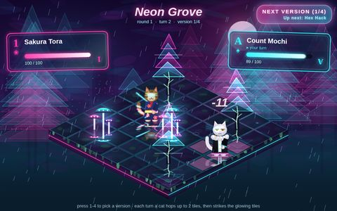
Neon Grove
Painterly neon isometric forest duel
by Fight Maker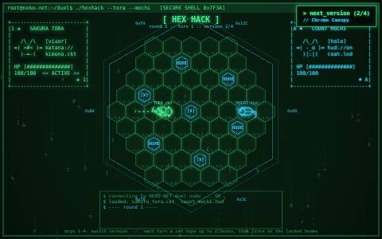
Hex Hack
Top-down hex terminal duel
by Fight Maker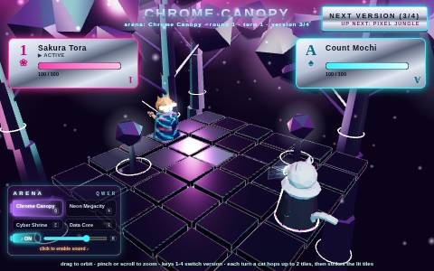
Chrome Canopy 3D
Real 3D chrome forest, pinch to zoom
by Fight Maker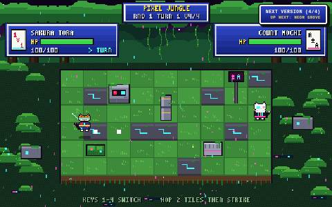
Pixel Jungle
16-bit pixel tactics jungle
by Fight Maker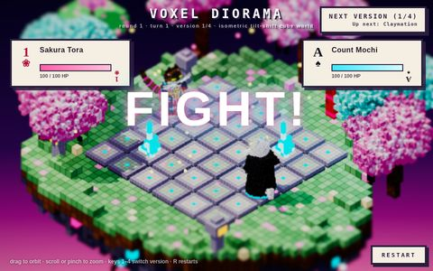
Voxel Diorama
Blocky voxel forest diorama
by Fight Maker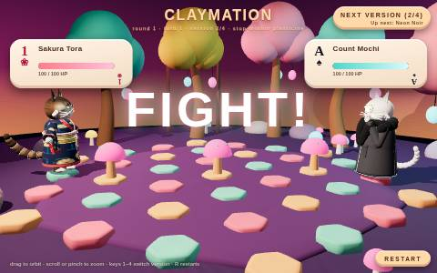
Claymation
Squishy clay cats, stop-motion feel
by Fight Maker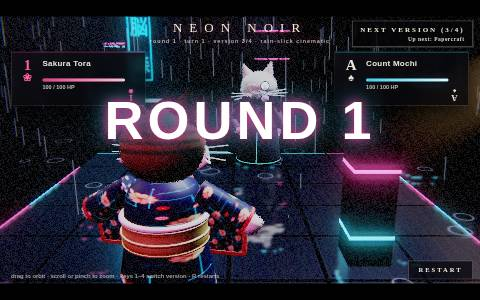
Neon Noir
Dark rain-slick neon noir forest
by Fight Maker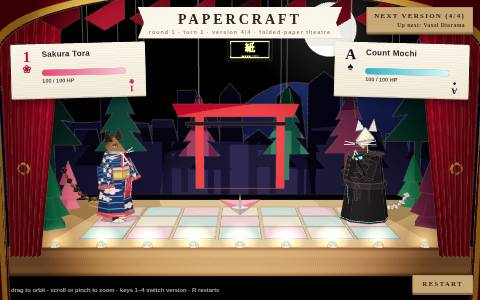
Papercraft
Folded-paper forest and fighters
by Fight Maker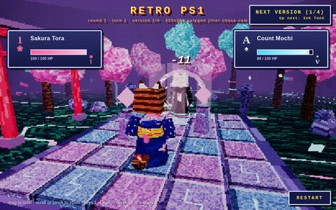
Retro PS1
Wobbly low-res 90s console look
by Fight Maker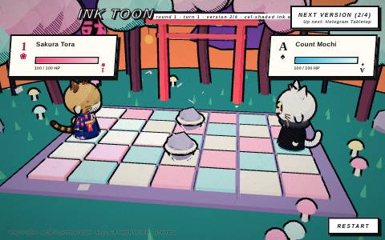
Ink Toon
Inked cel-shaded toon duel
by Fight Maker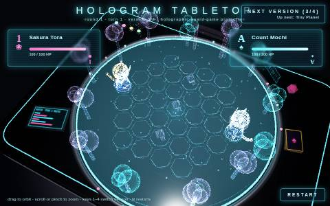
Hologram Tabletop
Glowing hologram on a tabletop
by Fight Maker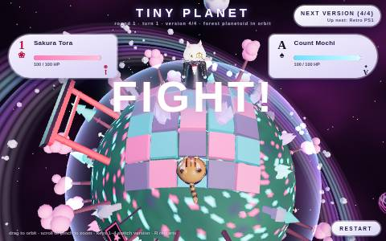
Tiny Planet (3D II)
The forest duel wrapped round a planet
by Fight MakerCat Forest 8
The isometric tile duel that started it all.
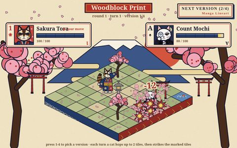
Woodblock Print
Ukiyo-e cherry shrine
by Fight Maker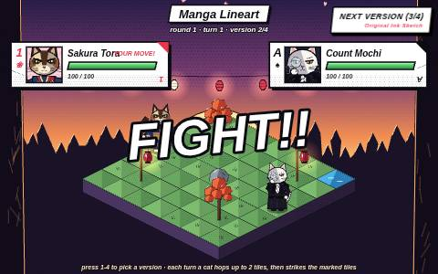
Manga Lineart
Cel-shaded dusk forest
by Fight Maker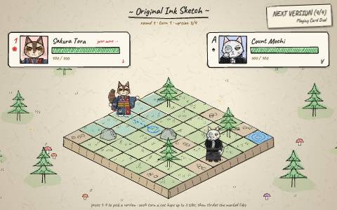
Original Ink Sketch
Ink and watercolor forest
by Fight Maker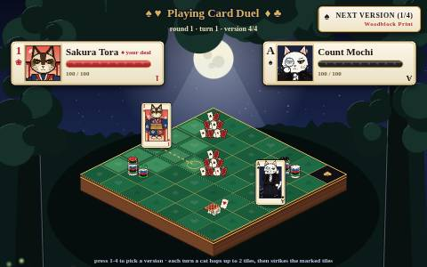
Playing Card Duel
Moonlit card table
by Fight Maker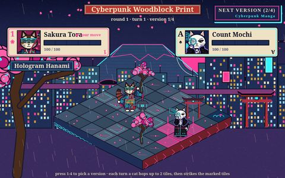
Cyberpunk Woodblock
Neon ukiyo-e megacity
by Fight Maker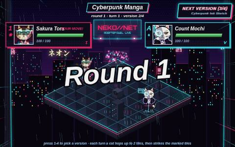
Cyberpunk Manga
Neon rooftop, anime lineart
by Fight Maker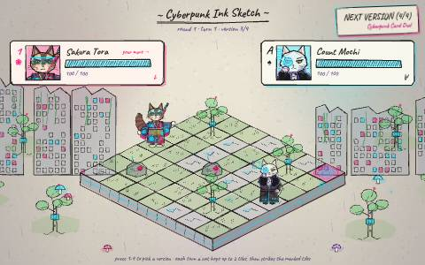
Cyberpunk Ink Sketch
Overgrown cyber ruins in ink
by Fight Maker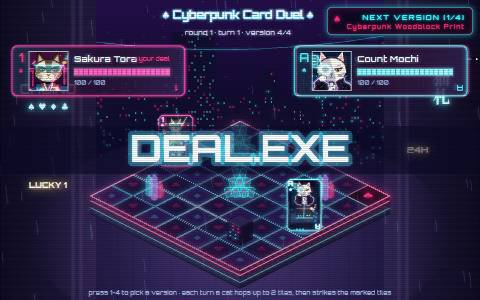
Cyberpunk Card Duel
Neon casino table in a cyber alley
by Fight MakerMechs 11
Giant mecha knight cats.
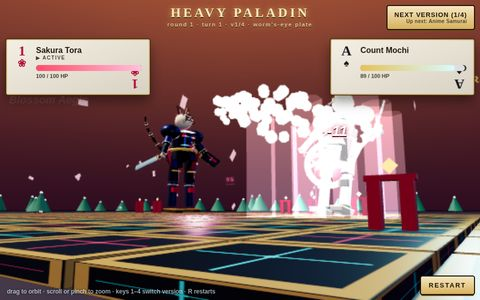
Heavy Paladin
Plate-armoured mecha knights, worm's-eye camera
by Fight Maker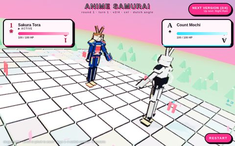
Anime Samurai
Cel-shaded mecha samurai, dutch angle
by Fight Maker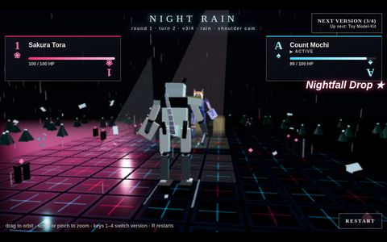
Night Rain War-Machine
Rain-soaked neon war machines
by Fight Maker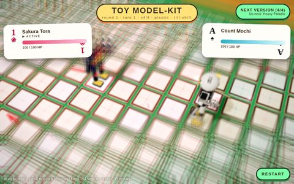
Toy Model Kit
Plastic model-kit mechs with tilt-shift
by Fight Maker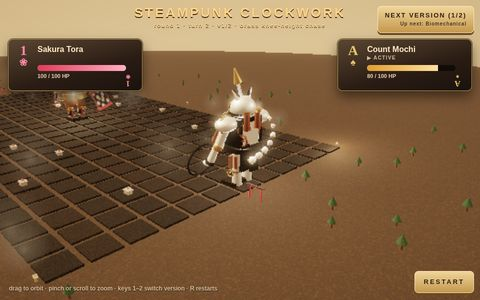
Steampunk Clockwork
Brass clockwork mechs, knee-height chase cam
by Fight Maker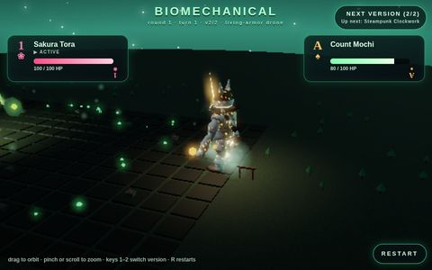
Biomechanical
Living-armour bio mechs, drone camera
by Fight Maker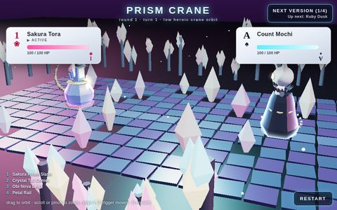
Crystal · Prism Crane
Prism-armoured Crystal Knights
by Fight Maker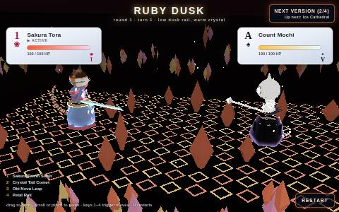
Crystal · Ruby Dusk
Crystal Knights at ruby dusk
by Fight Maker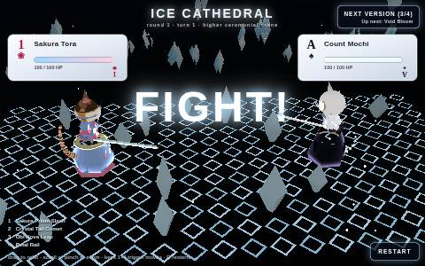
Crystal · Ice Cathedral
Crystal Knights in an ice cathedral
by Fight Maker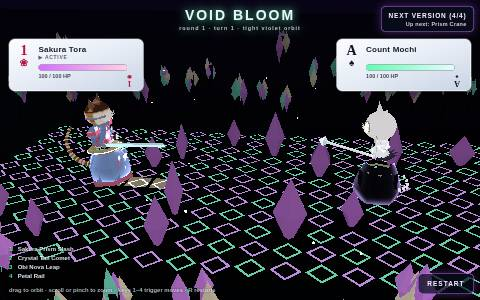
Crystal · Void Bloom
Crystal Knights in a void garden
by Fight Maker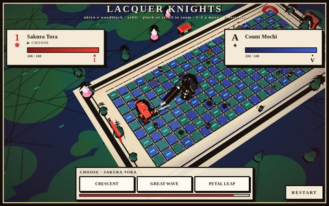
Lacquer Knights
Ukiyo-e woodblock temple duel
by Fight MakerPoly 10
Faceted polygon samurai mechs.
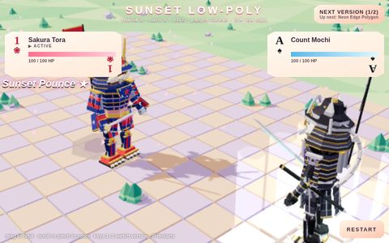
Sunset Low-Poly
Pastel flat facets, sunset sky
by Fight Maker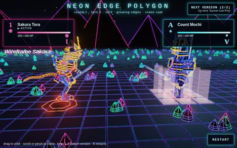
Neon Edge Polygon
Glowing polygon edges in a night forest
by Fight Maker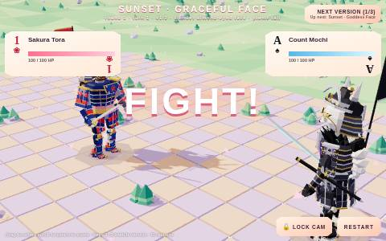
Sunset · Graceful Face
Sunset low-poly, graceful face and tail
by Fight Maker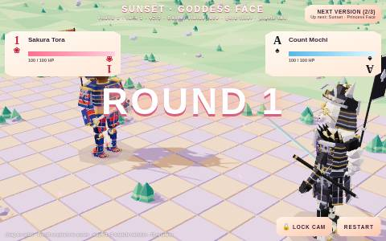
Sunset · Goddess Face
Sunset low-poly, goddess face
by Fight Maker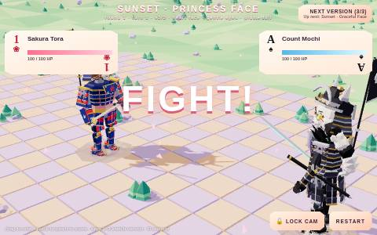
Sunset · Princess Face
Sunset low-poly, princess face
by Fight Maker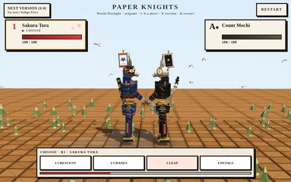
Paper · Washi Daylight
Folded-paper samurai mechs in daylight
by Fight Maker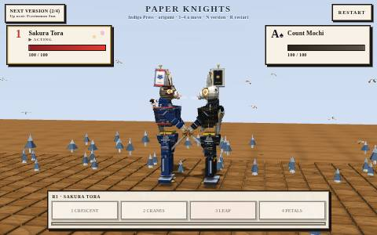
Paper · Indigo Press
Origami mechs in indigo print
by Fight Maker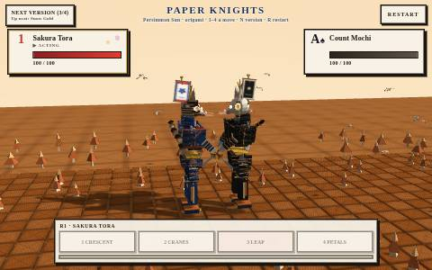
Paper · Persimmon Sun
Origami mechs under a persimmon sun
by Fight Maker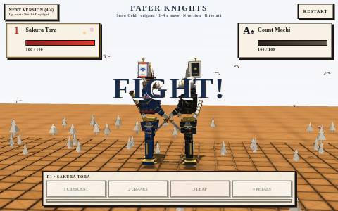
Paper · Snow Gold
Origami mechs in snow and gold
by Fight Maker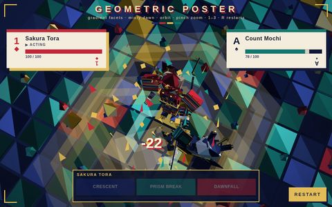
Geometric Gradient Poster
Low-poly art-print facets, high tilted camera
by Fight MakerArena games 7
Robot knight cats and brawling mechs, one arena each.
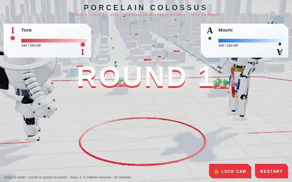
Porcelain Colossus
Robot knight cats 1 of 4: glazed porcelain giants
by Fight Maker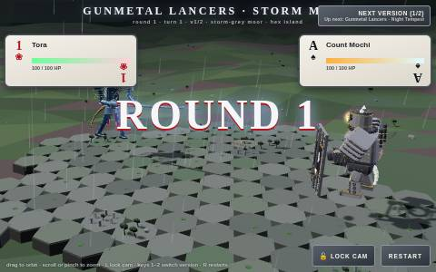
Gunmetal Lancers · Storm Moor
Robot knight cats 2 of 4 on a stormy moor
by Fight Maker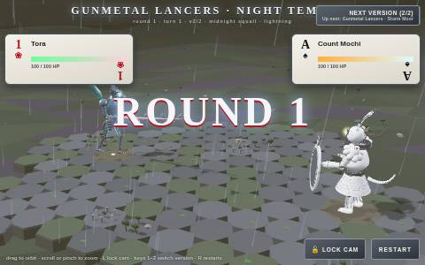
Gunmetal Lancers · Night Tempest
Same lancers in a night tempest
by Fight Maker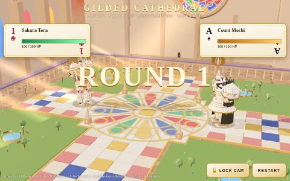
Gilded Cathedral
Robot knight cats 3 of 4: ivory and gold giants
by Fight Maker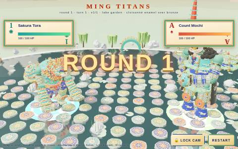
Ming Titans
Robot knight cats 4 of 4: cloisonné titans in a lake garden
by Fight Maker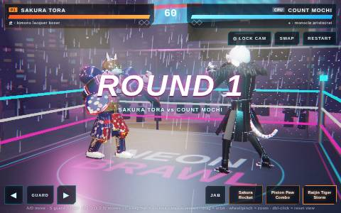
Neon Brawlers
Cyberpunk boxing mechs in a rain-soaked ring
by Fight Maker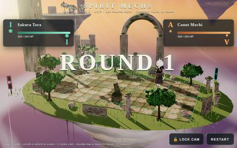
Spirit Mechs
Mossward vs Brassgrave in a floating ruin city
by Fight MakerKnights 4
Porcelain knight armours on the tiny planet.
Porcelain 4
Glazed figurine fighters.
Tiny Planet 4
The tile duel wrapped round a small planet.
Sprite Fights 4
Pixel-art fighters, four genres.
Earlier builds 19▾
Older, backup and staging builds, kept for comparison.
Cyber Forest (pre-pinch)
Before pinch zoom was added
by Fight MakerCyber Forest (v1)
The original Cyber Forest duel
by Fight MakerCyber Forest 3D (v1)
First 3D cut, starting with Glass Garden
by Fight MakerCyber Forest 3D II (v1)
First cut of 3D II
by Fight MakerMing Titans (pre-polish)
Before the final polish pass
by Fight MakerPorcelain Knight (earlier)
Earlier cut of the porcelain knights
by Fight MakerKnight · All Armours
Early combined knight build
by Fight MakerKnight · Silver Filigree
Staging build
by Fight MakerKnight · Rose Gold Parade
Staging build
by Fight MakerKnight · Gold Samurai
Staging build
by Fight MakerKnight · Celadon Guardian
Staging build
by Fight MakerPorcelain (first staging)
First porcelain staging build
by Fight MakerPorcelain · Ming (staging)
Staging build of Blue & White Ming
by Fight MakerPorcelain · Raku (staging)
Staging build of Kintsugi Raku
by Fight MakerTiny Planet · Porcelain (staging)
Staging build of Porcelain Garden
by Fight MakerTiny Planet (earlier)
Before the final pass
by Fight MakerTiny Planet (v1–2 only)
Early build with the first two styles
by Fight MakerSprite Fights (v2)
Earlier Sprite Fights build
by Fight MakerSprite Fights (v1)
The first Sprite Fights
by Fight Maker